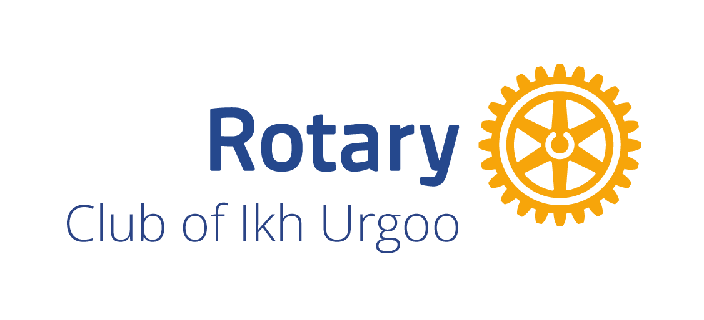
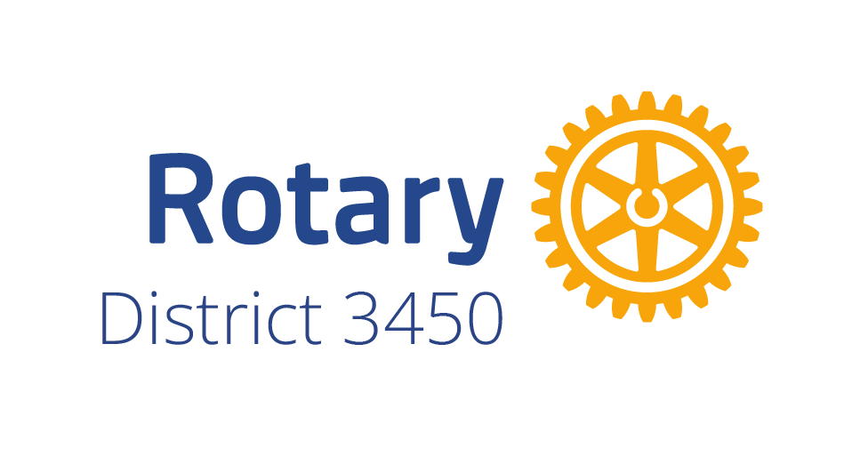
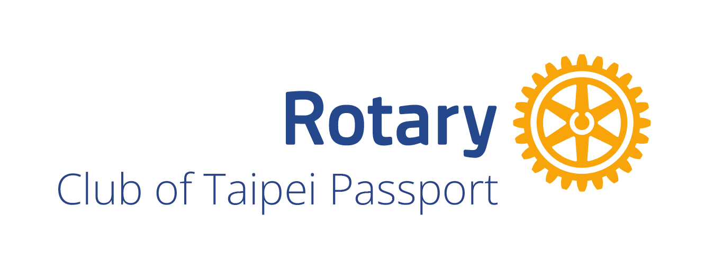
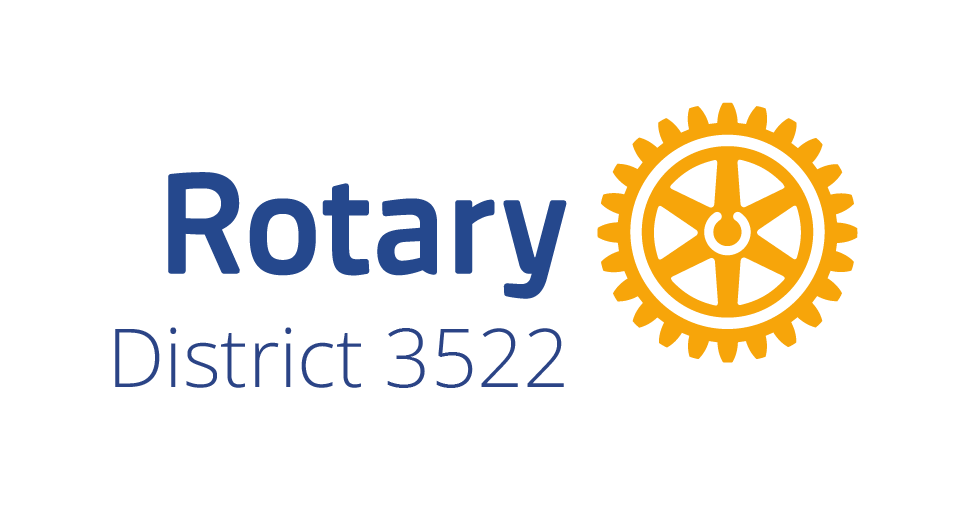

Гэрэл хүүхдийн номын санGerel Children's Library
Хараагүй болон хараа муу хүүхдэд зориулсан үнэгүй аудио номын сан.
A free audiobook library for blind and partially sighted children in Mongolia.
СанаачлагчWhose idea it was
О.Гэрэлт-ОдO. Gerelt-Od
Гэрэл номын сан сурагч О.Гэрэлт-Одын санаачилгаар бий болсон.
Gerel was started on the initiative of a student, O. Gerelt-Od.
Дэмжигч клубуудSupported by




Номын сан өнөөдөрThe library today
- 340 гаруй ном — 300 гаруй нь монгол, 42 нь англи хэлээр.
- 900 орчим цаг сонсох ном: 860 орчим цаг монгол, 41 цаг англи уншлага.
- Брайль хувилбар — монгол ном бүрийн брайль файлыг татаж болно.
- Дэлгэц бүр ярьдаг. Гар, чихэвч, тоон гараар удирдана; том үсгээр уншиж, өнгөө сольж болно.
- Үнэгүй, зар сурталчилгаагүй. Номыг утсандаа хадгалаад интернэтгүй сонсож болно.
- Over 340 books — more than 300 in Mongolian, 42 in English.
- About 900 hours of listening: about 860 hours in Mongolian, 41 in English.
- Braille — every Mongolian book can be downloaded as a braille file.
- Every screen speaks. It is used with the keyboard, a headset or a number keypad; books can be read in large print, with high-contrast colours.
- Free, with no advertising. Books can be saved on a phone and heard without internet.